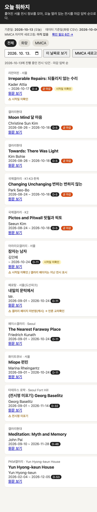
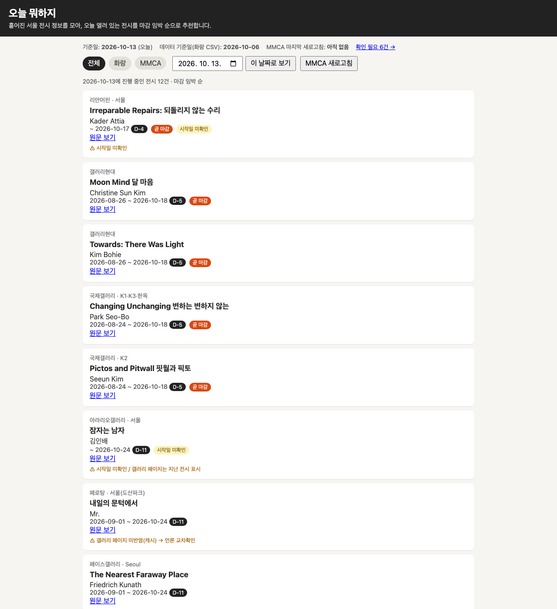
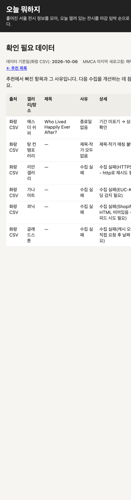

mvpgen 1차 실험 보고서
한 줄 아이디어를 기획, 구현, 검증까지 자동으로 진행해 실행 가능한 MVP로 만드는 시스템을 Claude Agent SDK로 구축하고, GitHub Actions에서 실제로 다섯 번 돌린 기록입니다. 설계, 데이터 흐름, 검증 루프, 겪은 문제와 원인, 그리고 다음 시스템에서 같은 일을 겪지 않기 위해 알아야 할 것을 정리했습니다.
1. 요약
파이프라인은 끝까지 돌아가고, 인증 없이 키를 쓰지 않는 Actions 실행, 아이디어 의도 대조, 참고 자료 반영까지 실제로 확인했습니다. 그러나 다섯 번의 실행 모두 critic이 첫 라운드에 합격시켰고 Stop hook도 한 번도 막지 않았습니다. 그래서 이 시스템의 핵심인 "스스로 고치는 루프"가 실제로 작동하는지는 아직 증명되지 않았습니다. 동시에 검증 기준 밖의 결함(휴대폰 화면 깨짐)은 mvpgen 실행 후 Claude Code가 맥에서 headless Chrome으로 스크린샷을 만들고 열어 보면서 발견했습니다. 다음 시스템의 과제는 루프를 더 돌리는 것이 아니라, 검증이 무엇을 못 보는지를 먼저 측정하는 것입니다.
2. 실험 목표와 범위
| 목표 | 한 줄 아이디어를 넣으면 기획, 구현, 검증을 거쳐 실행 가능한 MVP 폴더가 나오는 시스템 |
|---|---|
| 입력과 출력 | 입력은 아이디어 한 줄과 선택 사항(참고 자료 폴더, 외부 API 키), 출력은 동작하는 코드와 기획서, 평가 기록, 실행 리포트 |
| 구현 | Claude Agent SDK (Python, uv), 모델 claude-opus-5-5, 모듈 14개 약 1,800줄 |
| 실행 장소 | GitHub Actions (workflow_dispatch). 로컬에는 API 키가 없음 |
| 범위 밖 | 배포, 다중 사용자, 생성된 앱의 장기 유지보수 |
| 1차 종료 기준 | 사용자가 2026-10-13에 1차 구축 종료를 선언. 이후는 기능 추가가 아니라 문제점 점검 단계 |
3. 시스템 설계
핵심 결정은 "LLM 하나에 전체를 맡기지 않는다"입니다. 단계 순서, 합격 판정, 예산, 상태 저장은 Python 오케스트레이터가 정하고, LLM은 각 단계 안의 생성과 평가만 맡습니다.
| 결정 | 선택 | 이유 |
|---|---|---|
| 오케스트레이션 | Python 코드가 단계와 판정을 결정 | LLM이 스스로 "다 됐다"고 판단하는 것을 믿지 않기 위해 |
| 단계 분리 | Plan, Build, 최종 검증, 리포트가 각각 별도 query() 세션 | 단계 사이는 파일로만 넘겨 맥락 오염을 막음 |
| 스택 | Plan 에이전트가 아이디어에 맞게 선택 | 사용자 선택 |
| 도구 권한 | 단계별 도구 허용 목록 + permission_mode="dontAsk" | 목록 밖 도구는 묻지 않고 거부 |
| 설정 격리 | setting_sources=[] | 사용자와 프로젝트의 Claude Code 설정이 끼어들지 않게 |
| 인증 | Workload Identity Federation | 저장소와 러너에 API 키를 두지 않기 위해 |
모듈 구성
| 모듈 | 역할 | 줄 수 |
|---|---|---|
| pipeline.py | 단계 순서, 생성자와 critic 루프, 예산, 상태 저장, 폴더 이름 변경, 리포트 | 409 |
| prompts.py | 단계별 시스템 프롬프트, 작업 프롬프트, 참고 자료 안내 | 181 |
| verify.py | install, test, 실행과 smoke (LLM 없음) | 176 |
| guards.py | PreToolUse: 위험 명령, 작업 폴더 밖 쓰기, 보호 폴더 접근, 비밀값 기입 차단 | 154 |
| agents.py | query() 래퍼, 콘솔 출력, 로그, 비용 수집 | 145 |
| identity.py | 인증 수단 판별, GitHub OIDC 토큰 60초 갱신 | 144 |
| critic.py | review 스키마, 합격 판정, 스냅샷과 롤백 | 126 |
| cli.py | 명령행 옵션, 실행 폴더 결정, --resume, --context, --lessons | 116 |
| spec.py | spec.json 스키마(intent 포함), Plan 검사 | 110 |
| envfiles.py | secrets/claude.env, mvp.env 로딩 | 73 |
| lessons.py | 실행 간 교훈 누적, 병합 | 57 |
| context.py | 참고 자료 복사와 비밀값 검사 | 56 |
| gates.py | Stop hook 게이트 | 46 |
| rubrics.py | Plan 6항목, Build 5항목 루브릭 | 20 |
파이프라인 구조
flowchart TD
I["아이디어 + 참고 자료(context/) + lessons.md"] --> P["Plan 세션: PRD.md, spec.json 작성"]
P -->|"종료 시도"| G1{"Stop hook: spec 스키마, intent, PRD 제목"}
G1 -->|"실패: block, 최대 3회"| P
G1 -->|"통과"| C1["Plan critic: 새 세션, 루브릭 6항목"]
C1 -->|"80점 미만 또는 critical"| P
C1 -->|"합격"| R["폴더 이름 변경: 시각-mvp 를 시각-spec.name 으로"]
R --> B["Build 세션: app/ 구현"]
B -->|"종료 시도"| G2{"Stop hook: install, test, 실행+smoke"}
G2 -->|"실패: block"| B
G2 -->|"통과"| C2["Build critic: 앱을 직접 띄워 확인, 루브릭 5항목"]
C2 -->|"불합격"| B
C2 -->|"합격"| V["최종 검증: LLM 없이 install, test, smoke"]
V --> O["README.md, run_report.json"]
C1 -.->|"major 이상 지적"| L["lessons.md"]
C2 -.->|"major 이상 지적"| L
개정은 단계별 최대 2회이고, 점수가 직전 최고점보다 떨어지면 최고점 라운드의 산출물로 되돌립니다. 개정 한도에 닿으면 최고점 라운드로 진행합니다.
4. 데이터 흐름
단계 사이에서 넘어가는 것은 모두 파일입니다. 세션끼리는 대화를 공유하지 않습니다. 그래서 어떤 파일을 누가 쓰고 누가 읽는지가 곧 시스템의 인터페이스입니다.
| 파일 | 쓰는 쪽 | 읽는 쪽 | 보관 |
|---|---|---|---|
| context/* | CLI (--context 복사) | Plan, Build, 두 critic | 실행 폴더 |
| PRD.md, spec.json | Plan 세션만 (가드가 강제) | Plan 검사, Plan critic, Build, 검증기 | 실행 폴더 |
| app/ | Build 세션만 | Build 검사, Build critic, 최종 검증 | 실행 폴더 |
| reviews/*.json | 각 critic이 자기 파일만 | 오케스트레이터 (합격 판정, 개정 지시) | 실행 폴더 |
| snapshots/ | 오케스트레이터 | 롤백 | 실행 폴더 (artifact에서는 제외) |
| logs/*.log | agents.py | 사람 | 실행 폴더 |
| state.json | 오케스트레이터 | --resume | 실행 폴더 (절대 경로 없음) |
| run_report.json, README.md | 오케스트레이터 | 사람 | 실행 폴더 |
| lessons.md | 오케스트레이터, Actions의 save-lessons | 다음 실행의 Plan, Build | 저장소 루트 (10-13 변경) |
| secrets/mvp.env | 사람 / Actions가 Secret에서 생성 | 앱 실행 환경 (값), 프롬프트 (이름만) | git 제외 |
flowchart LR
subgraph IN["입력"]
idea["아이디어"]
ctx["참고 자료 폴더"]
keys["mvp.env 키"]
les["lessons.md"]
end
subgraph RUN["실행 폴더 workspace/시각-이름/"]
c["context/"]
plan["PRD.md / spec.json"]
app["app/"]
rev["reviews/"]
st["state.json / logs/"]
rep["run_report.json / README.md"]
end
ctx -->|"비밀값 검사 후 복사"| c
idea --> plan
c --> plan
les --> plan
plan --> app
c --> app
keys -->|"값은 실행 환경으로만"| app
plan --> rev
app --> rev
rev -->|"major 이상"| les
app --> rep
rev --> rep
폴더 이름이 실행 중간에 바뀝니다. 상태 파일에 절대 경로를 두지 않아 추적은 이어지지만, 시작 로그에 찍힌 경로와 끝난 뒤의 경로가 다르고 --resume에는 옛 이름을 찾는 보완 코드가 필요했습니다. 실행 ID와 표시 이름을 처음부터 분리했다면 필요 없었던 복잡도입니다(12절).
5. 검증 루프
설계상 루프는 네 겹입니다. 아래 표의 마지막 열이 이번 실험의 핵심 관찰입니다.
| 루프 | 위치 | 판정 주체 | 무엇을 보나 | 실제 작동 |
|---|---|---|---|---|
| Stop hook 게이트 | 세션 안 | 코드 (결정적) | Plan: 스키마, intent, PRD 제목 / Build: install, test, 실행, smoke 문자열 | block 0회 오프라인 테스트로만 확인 |
| 독립 critic | 세션 밖 | LLM (같은 모델) | 루브릭 항목, Build는 앱을 띄워 curl로 확인 | 불합격 0회 5회 모두 1라운드 합격 |
| 최종 검증 | 파이프라인 끝 | 코드 | install, test, smoke | 작동 모두 통과 |
| lessons.md | 실행 사이 | 코드 | major 이상 지적만 누적 | 사실상 미작동 CI에서 매번 초기화(10-13 수정), 지적은 대부분 minor |
결정적 검사가 보는 것
설치가 되는가, 테스트가 통과하는가, 서버가 떠서 응답 본문에 특정 문자열이 있는가. 화면이 깨져도, 버튼이 화면 밖에 있어도 이 문자열만 있으면 통과합니다.
critic이 보는 것
루브릭에 적힌 것. 이번 Build 루브릭에는 화면 폭이나 접근성 항목이 없었고, critic은 브라우저 없이 curl로만 확인했습니다. 생성자와 같은 모델이라 같은 맹점을 공유할 가능성도 있습니다.
아무도 보지 않은 것
- 실제 브라우저 렌더링과 휴대폰 폭
- 외부 API를 실제 키로 부르는 경로
- 데이터의 최신성(10-06 수집 샘플)
- 루프 자체가 결함을 잡는 능력
6. 실행 환경과 인증
GitHub Actions가 발급하는 OIDC 토큰을 Anthropic의 Workload Identity Federation 규칙과 교환해 API를 씁니다. 저장소와 러너에 API 키가 없습니다. 대신 규칙의 조건(제목 접두사, 필수 클레임)이 refs/heads/main과 workflow_dispatch에 묶여 있어 다른 브랜치에서는 실행할 수 없습니다.
| 토큰 교환 | mvpgen이 GitHub OIDC 토큰을 받아 ANTHROPIC_IDENTITY_TOKEN_FILE에 쓰고 60초마다 갱신. GitHub 토큰은 약 5분 뒤 만료되고 한 번만 교환 가능 |
|---|---|
| 토큰 보호 | 토큰 발급 권한 변수는 읽은 직후 환경에서 지움. 페더레이션 변수와 토큰 파일은 생성된 앱의 실행 환경에 넘기지 않음. 에이전트가 해당 이름에 접근하는 명령은 가드가 차단 |
| 범위와 수명 | workspace:developer, 3,600초 |
| 실행 직렬화 | concurrency: mvpgen-ref, cancel-in-progress: false. 두 번째 실행은 첫 실행이 끝날 때까지 대기 |
잡과 권한 (10-13 이후)
flowchart LR
subgraph J1["generate 잡: id-token write, contents read"]
a1["checkout (dispatch 시점 커밋)"] --> a2["MVP_ENV Secret을 secrets/mvp.env로"]
a2 --> a3["mvpgen 실행 (에이전트가 도는 곳)"]
a3 --> a4["artifact: workspace/"]
a3 --> a5["artifact: lessons.md"]
end
subgraph J2["save-lessons 잡: contents write"]
b1["checkout 최신 main"] --> b2["lessons artifact 다운로드"]
b2 --> b3["merge_lessons: 양쪽 항목 보존"]
b3 --> b4{"변경 있음?"}
b4 -->|"예"| b5["github-actions bot이 main에 commit, push"]
b4 -->|"아니오"| b6["종료"]
end
a5 --> b2
쓰기 권한은 에이전트가 돌지 않는 save-lessons 잡에만 있습니다. 에이전트가 쓰기 권한 토큰에 닿을 경로를 만들지 않으려고 잡을 둘로 나눴습니다.
7. 진행 경과
10-12: 구축과 첫 실행
- 14:12
최초 구현 커밋
요구 확인, Agent SDK 문서 확인, 사용자 질문("스스로 검증하고 개선하는 루프가 있나")에 따라 Stop hook과 critic 추가. 모듈 12개와 오프라인 테스트.
- 이후
Federation 규칙 두 차례 수정
규칙 제목 접두사를 옛 형식으로 안내했다가, GitHub API로 실제 토큰 형식(owner와 저장소 숫자 ID 포함)을 조회해 정정.
- 15:36
워크플로가 시작되지 않음 (HTTP 422)
job 수준
env에서runner컨텍스트를 쓸 수 없음. 제거. - 15:38
1차 실행: 크레딧 부족
인증은 통과로 보였으나
Credit balance is too low. 그런데 "자동 검사 실패"로 잘못 보고됨. API 오류면 즉시 중단하고 원문 메시지를 보이게 수정. - 15:45
2차 실행 성공 (메모장, $0.44, 약 3분)
Build critic이 생성된 README의
PORT=8000 cmd --port $PORT가 동작하지 않음을 지적(major). README 생성기와 Build 프롬프트 수정. 이 지적이 lessons.md의 첫 항목. - 15:52
ARCHIVE와 README 빠른 사용법
10-13: 리뷰, 확장, 실험, 마무리
- 오전
코드 리뷰 (/code-review)
README 빠른 사용법에서 지적 8건: 스택 고정 설치 명령, slug 설명 없음, 결과물 없을 때 안내 없음, zip 실행 권한, 낮은 예산 예시,
--ref main누락, 중복. 모두 반영. 질문: 한글 아이디어와 폴더 이름
한글은 동작에 문제없고 폴더 이름만
시각-mvp. Plan이 만드는 영문spec.name을 재사용하기로 결정.질문: 의도 검증 루프 뒤 이름 변경 시 추적 가능성
상태 파일에 절대 경로가 없고 세션을 재사용하지 않아 가능하다고 판단. 새 루프 대신 Plan 루프 강화(intent + Stop gate + 루브릭 6번).
- 11:49
구현과 커밋 7f1a5bd
외부 검토(advisor)가
-mvp로 끝나는 모든 이름을 바꾸는 버그를 지적(todo-mvp가todo-fake-todo로 바뀜). 정확한 형태만 바꾸도록 수정. main에 직접 커밋한 것은 실수로 기록. 의사소통 혼선
브랜치와 federation 관계를 기술 용어로 설명해 사용자가 "다시 설명해"를 요청. 결정을 위해 경과 HTML을 만들어 공유.
- 12:04
전후 비교 실행
push 전에 예전 코드로 실행(커밋 5094fa7에 묶인 것 확인), push 후 같은 아이디어로 새 코드 실행. 직렬화 설정 덕에 두 번째는 대기 후 실행.
참고 자료 요청과 키 발견
"오늘 뭐하지" 앱용 조사 자료 폴더의 API 문서에 서비스키 값이 그대로 들어 있었음. 키 확인 명령은 auto mode가 Credential Exploration으로 차단. 사용자가 다른 도구로 키를 옮겼고, 그 도구의 작업 로그에 키 값이 그대로 출력됨.
mvp.env가 새로 만들어져 기존 내용이 덮였을 가능성.- 12:31
--context 구현, 자료 커밋은 차단
자료 복사 시
mvp.env값과 대조하는 검사 추가. 키를 지운 사본의 커밋이 Sensitive-Source Provenance로 차단되어 코드만 커밋. 사용자가 명시적으로 지시한 뒤 자료 커밋 성공(12:51). Remote Control
사용자가
/remote-control로 휴대폰에서 세션을 조종. 이후 결과 파일과 스크린샷을 세션으로 전송.- 12:51~13:01
"오늘 뭐하지" 생성 ($1.96, 8.6분)
mvpgen 실행이 끝난 뒤 Claude Code가 맥에서 앱을 띄워 headless Chrome으로 스크린샷을 만들고 Read 도구로 열어 봄. 13:01에 휴대폰 폭의 가로 넘침을 사용자에게 알림. mvpgen 검증 루프 어디에서도 잡히지 않은 결함.
"새로운 아이디어로 비교" 혼선
사용자는 비교가 예전 아이디어로 진행됐다고 기억. 실제로는 새 아이디어(책 기록장)였음을 결과 표로 확인.
workspace/는 왜 git 제외인가
이유가 기록되어 있지 않았음. 추정하다가 lessons.md도 그 안에 있어 Actions에서는 매번 비어 있다는 것을 발견. README가 설명하는 세 번째 루프가 CI에서는 작동하지 않고 있었음.
- 13:32
lessons.md 저장소 보관, save-lessons 잡
쓰기 권한을 분리한 별도 잡이 최신 main에 병합 커밋. 실행 중 main이 바뀌어도 항목을 잃지 않게 병합 함수 추가.
- 13:48
1차 구축 종료
ARCHIVE 갱신, push. 이후는 문제점 점검 단계.
8. 실행 결과
| run | 아이디어 | 코드 | 설정 | Plan / Build | 비용 | 시간 | 결과 |
|---|---|---|---|---|---|---|---|
| 1차 | 메모장 | 1335886 | - | - | $0 | - | 크레딧 부족 |
| 38213721713 | 간단한 메모장 웹앱 | ebb6563 | low, $1 | 88 / 87 | $0.44 | 약 3분 | 성공 |
| 38339954369 | 읽은 책 기록장 | 5094fa7 | low, $2 | 90 / 90 | $0.55 | 2.7분 | 성공 |
| 38339966010 | 읽은 책 기록장 | 7f1a5bd | low, $2 | 88 / 90 | $0.45 | 5.3분 | 성공 |
| 38343685543 | 오늘 뭐하지 (+ 참고 자료) | e2c241e | high, $5 | 88 / 92 | $1.96 | 8.6분 | 성공 |
시간은 Actions 실행의 시작과 마지막 갱신 시각 차이입니다. 비용은 SDK가 계산한 클라이언트 측 추정치입니다. 성공한 모든 실행이 critic 1라운드 합격, Stop hook block 0회였습니다.
의도 검증 전후 비교 (책 기록장)
| 항목 | 예전 코드 | 새 코드 |
|---|---|---|
| 폴더 | 20261013-030441-mvp | 20261013-030724-book-log |
| intent | 없음 | 요구 3개를 기능에 연결 |
| 기능 | 6개 (아이디어에 없는 다 읽음 표시, 삭제 포함) | 5개 (요구 3개 + 목록, 입력 검증) |
| Plan critic | 대략적 총평 | 요구별 대조, "지어낸 요구 없음" 명시 |
| 공통 minor 지적 | smoke 문자열이 명세에 없음, 의존성 미명시, 400 화면 입력값 미유지, 접속 URL 없음. 두 실행 모두 같은 지적 | |
구조 변화는 확실합니다. 점수와 비용 차이는 1회씩이라 판단 근거가 되지 못합니다.
오늘 뭐하지 결과 화면



참고 자료는 의도대로 반영됐습니다. 수집 CSV의 10개 컬럼과 needs_review를 그대로 썼고, MMCA API 문서의 엔드포인트와 필드를 따랐으며, 실행 중 크롤링은 하지 않았습니다. 앱 시작 시 네트워크를 부르지 않고 캐시만 읽도록 기획한 점도 자료의 성격을 이해한 결과입니다.
9. 발견한 문제와 원인
| 문제 | 어떻게 발견했나 | 근본 원인 | 상태 |
|---|---|---|---|
| Federation 규칙 접두사 오안내 | 문서 확인 중 | 토큰 형식을 기억에 의존. 실제 값을 조회하지 않음 | 수정 |
| 워크플로 시작 실패 | 1차 실행 422 | GitHub 컨텍스트 사용 가능 범위를 몰랐음 | 수정 |
| API 오류를 검사 실패로 보고 | 1차 실행 로그 | 실패 경로를 하나로 뭉쳐 처리 | 수정 |
PORT=8000 cmd $PORT 동작 안 함 | Build critic (major) | 셸 변수 확장 순서 | 수정 |
| README 사용법 8건 | 코드 리뷰 | 한 스택(FastAPI)만 가정, 실패 경로 안내 없음 | 수정 |
| 한글 아이디어의 폴더 이름 | 사용자 질문 | 폴더 이름을 실행 시작 시점에 아이디어 문자열로 결정 | 우회 실행 중 이름 변경 |
todo-mvp 오변경 | 외부 검토 | 접미사 비교로 대체 이름을 판정 | 수정 |
| 문서에 API 키 포함 | 자료 확인 중 | 자료 작성 시 키와 문서를 분리하지 않음 | 사본 정리 원본은 그대로 |
| 다른 도구 로그에 키 값 노출 | 붙여넣은 작업 로그 | 키 이동을 사람이 범용 에이전트에 맡김. 출력 마스킹 없음 | 재발급 검토 |
| 휴대폰 화면 깨짐 | mvpgen 실행 후 Claude Code가 스크린샷을 열어 발견 | mvpgen 검증 단계가 브라우저 화면 폭을 보지 않음 | 미해결 |
| critic, gate가 한 번도 불합격시키지 않음 | 실행 리포트 집계 | 판정 기준이 느슨하거나, 아이디어가 쉬웠거나, 같은 모델의 자기 평가 편향. 원인 미구분 | 미해결 |
| 같은 minor 지적 반복 | 두 실행 review 비교 | lessons가 major 이상만 기록 | 설계 판단 필요 |
| lessons.md가 CI에서 매번 초기화 | git 제외 이유를 추적하다가 | 상태 파일을 일회용 폴더에 둠. CI가 일회용 환경이라는 점을 설계에 반영하지 않음 | 수정 미실행 |
| 생성된 앱의 버전 관리 불가 | 후속 작업 논의 | 결과물을 일회용 산출물로만 가정 | 미해결 |
| main 직접 커밋 | 사용자 질문 | 저장소 관행을 따름. 인증이 main에 묶여 브랜치 실행 불가 | 구조적 제약 |
10. git pull이 필요해진 이유
마지막 변경으로 저장소에 커밋하는 주체가 둘에서 셋이 되었습니다. 사용자와 Claude 세션, 그리고 Actions의 봇입니다. 봇은 실행이 끝날 때마다 새 교훈이 있으면 main에 lessons.md를 커밋합니다. 로컬 main이 그 커밋을 모르는 상태에서 새 커밋을 만들면, GitHub의 main과 로컬 main이 서로 다른 갈래가 되어 push가 거절됩니다.
sequenceDiagram participant L as 로컬 main participant G as GitHub main participant A as Actions L->>G: push (A 커밋) G->>A: workflow_dispatch, A 커밋으로 실행 A->>G: save-lessons가 B 커밋 push Note over L: 로컬은 B를 모름 L->>L: 새 작업 C 커밋 (부모 A) L->>G: push G-->>L: 거절 (non-fast-forward) L->>G: git pull 후 다시 push
Actions를 실행한 뒤 로컬에서 작업을 시작할 때는 git pull을 먼저 합니다. 이미 커밋했다면 git pull --rebase로 봇 커밋 위에 올리면 됩니다. 이 마찰은 상태(lessons)와 코드가 같은 브랜치에 있어서 생깁니다. 다음 시스템에서는 상태를 별도 브랜치나 저장소 밖에 두는 편이 낫습니다(12절).
11. 무지의 영역
이번 실험에서 문제를 일으킨 것은 대부분 모르는 것을 모른 상태에서 내린 가정이었습니다. 아래는 "몰랐다는 사실 자체를 나중에 알게 된 것"과 "아직 모르는 것"을 나눈 정리입니다.
몰랐다는 것을 나중에 알게 된 것
| 가정 | 실제 | 교훈 |
|---|---|---|
| 검증을 통과하면 쓸 만한 앱이다 | 검증은 루브릭과 smoke 문자열만 봄. 화면이 깨져도 92점 | 검증이 보는 범위를 명시하고, 범위 밖을 따로 목록화한다 |
| 루프가 있으면 루프가 일한다 | 5회 모두 루프가 한 번도 돌지 않음 | 루프의 효과는 일부러 결함을 심은 입력으로 측정해야 안다 |
| 로컬에서 쌓이는 상태는 CI에서도 쌓인다 | CI는 매번 빈 환경. git 제외 폴더의 상태는 사라짐 | 상태 파일마다 "어디에 영속하는가"를 설계 단계에서 표로 정한다 |
| 폴더 이름은 처음에 정하면 된다 | 의미 있는 이름은 Plan 뒤에야 생김 | 불변 ID와 표시 이름을 분리한다 |
| 자료 폴더는 그냥 넘기면 된다 | 자료 안에 키가 있었고, 키 이동 과정에서 다른 도구 로그로 새어 나감 | 자료 투입 경로에 비밀값 검사를 기본으로 두고, 키는 사람이 전용 경로로만 다룬다 |
| 브랜치에서 작업하고 PR로 합치면 된다 | 인증 규칙이 main에 묶여 브랜치에서 실행 불가 | 인증 범위와 개발 흐름(브랜치, PR, 비교 실행)을 함께 설계한다 |
| 에이전트는 지시받은 일을 다 할 수 있다 | auto mode 분류기가 키 탐색과 키 출처 파일 커밋을 차단 | 사람이 해야 할 단계를 처음부터 워크플로에 표시한다 |
| 한 번씩 돌려 비교하면 차이를 안다 | 점수와 비용은 실행마다 흔들림 | 비교는 같은 조건 여러 회, 분포로 본다 |
| 기술 설명이 정확하면 전달된다 | "브랜치, federation, subject" 설명에 사용자가 다시 설명을 요청 | 결정이 필요한 순간에는 결과와 선택지부터, 원리는 나중에 |
아직 모르는 것
critic의 판별력
critic이 결함을 실제로 잡는지, 잡는다면 어떤 종류를 놓치는지 모릅니다. 불합격이 0회인 이유가 품질인지 관대함인지 구분할 데이터가 없습니다.
같은 모델의 자기 평가 편향
생성자와 critic이 같은 모델입니다. 다른 모델이나 결정적 검사로 교차 확인했을 때 결과가 달라지는지 측정하지 않았습니다.
어려운 아이디어에서의 동작
지금까지는 3~6개 기능의 단순한 CRUD 앱이었습니다. 요구가 모호하거나 많을 때 intent 검증이 얼마나 도움이 되는지 모릅니다.
긴 실행과 토큰 갱신
가장 긴 실행이 8.6분이었습니다. 10분 이상, 특히 개정 라운드가 여러 번 도는 긴 실행에서 인증 갱신이 버티는지 확인하지 않았습니다.
save-lessons의 실제 동작
artifact 다운로드 버전 호환, 봇 push 권한, 병합 결과를 실제 실행으로 보지 않았습니다.
비용 추정의 정확도
SDK가 계산한 클라이언트 측 추정치만 봤습니다. 실제 청구액과 대조하지 않았습니다.
12. 다음 시스템 제안
원칙은 하나입니다. 검증 루프를 더 쌓기 전에, 검증이 무엇을 놓치는지부터 측정할 수 있게 만듭니다. 아래 제안은 설계 방향이고, 특정 도구의 기능에 기대는 항목은 13절에 확인 방법과 함께 적었습니다.
1. 평가 체계 먼저
- 고정된 아이디어 세트(쉬움, 모호함, 외부 API, 모바일 중심)를 회귀 벤치마크로 둡니다.
- 결함을 일부러 심은 앱(버튼 화면 밖, 잘못된 정렬, 키 하드코딩)을 critic에 넣어 탐지율을 잽니다.
- 같은 조건 N회 실행으로 점수, 비용, 통과율의 분포를 봅니다.
2. 결정적 검사를 넓히기
- 실제 브라우저로 여러 폭(예: 390px, 1280px)에서 스크린샷과 가로 넘침 검사를 합니다.
- 접근성 자동 검사, 콘솔 에러, 깨진 링크를 Stop gate에 넣습니다.
- 완료 기준을 먼저 실행 가능한 테스트로 만들고, 구현은 그 테스트를 통과하는 방향으로 진행합니다.
3. critic을 독립적으로
- 스크린샷을 critic에게 이미지로 보여 줍니다.
- 생성자와 다른 모델이나 다른 프롬프트 계열로 교차 평가합니다.
- 합격 점수 대신 "검사 항목별 통과/실패 근거"를 필수 출력으로 합니다.
4. 상태 설계를 처음에
- 모든 상태 파일에 대해 누가 쓰고, 어디에 영속하고, CI에서 어떻게 이어지는지 표를 먼저 만듭니다.
- 교훈 같은 공유 상태는 코드 브랜치와 분리합니다(전용 브랜치나 외부 저장소). git pull 마찰이 사라집니다.
- minor라도 여러 실행에서 반복되면 교훈으로 승격하는 규칙을 둡니다.
5. 실행 ID와 결과물 수명
- 폴더는 불변 실행 ID로 정하고, 앱 이름은 메타데이터로 둡니다. 실행 중 이름 변경이 필요 없습니다.
- 계속 다듬을 앱은 생성 직후 자기 저장소나 브랜치를 갖게 합니다.
6. 비밀값 경로를 좁히기
- 자료 투입, 로그 기록, artifact 업로드 세 지점 모두에 비밀값 검사와 마스킹을 둡니다.
- 키는 사람이 전용 명령으로만 등록하고, 에이전트는 이름만 압니다. 이번처럼 범용 도구에 키 이동을 맡기지 않습니다.
7. 인증과 개발 흐름을 함께
- 실험 브랜치용 federation 규칙을 따로 두면 PR 기반 비교 실행이 가능합니다. 범위는 좁게 잡습니다.
- 버전 비교는 같은 입력을 두 커밋에서 동시에 돌리는 전용 워크플로로 만듭니다.
8. 관찰 가능성
- 단계별 비용, 턴 수, 도구 호출, gate 결과를 한 곳에 모아 실행 간 비교 대시보드를 만듭니다.
- 프롬프트와 루브릭에 버전을 붙여 결과와 함께 기록합니다.
9. 사람과의 접점
- 사람만 할 수 있는 단계(키 등록, 비용 승인, 화면 확인)를 워크플로에 명시적 체크포인트로 둡니다.
- 보고는 결론과 선택지부터, 근거는 그 아래에 둡니다.
우선순위
| 순서 | 할 일 | 이유 |
|---|---|---|
| 1 | 결함을 심은 입력으로 critic과 gate의 탐지율 측정 | 루프가 일하는지 모르는 채로는 다른 개선의 효과도 측정할 수 없음 |
| 2 | 브라우저 기반 화면 검사를 Stop gate에 추가 | 이번에 실제로 놓친 결함의 종류 |
| 3 | 상태 영속 표 작성, lessons를 코드 브랜치에서 분리 | CI 초기화와 git pull 마찰을 함께 해결 |
| 4 | 실행 ID와 표시 이름 분리, 결과물 저장소 분리 | 이름 변경 복잡도 제거, 앱 유지보수 가능 |
| 5 | 비밀값 검사를 로그와 artifact까지 확장 | 이번 키 노출 경로를 막음 |
13. 미확인 항목과 확인 방법
| 항목 | 확인 방법 |
|---|---|
save-lessons 잡 동작, download-artifact@v8.0.1와 업로드 v7 호환 | 다음 Actions 실행 뒤 잡 로그와 main 커밋 확인 |
| 10분 이상 실행 시 인증 갱신 | 기능이 많은 아이디어를 effort high로 실행하고 로그의 갱신 기록 확인 |
| critic 불합격 후 개정, Stop hook block의 실제 동작 | 결함을 심은 입력이나 일부러 어려운 smoke 조건으로 실행 |
| MMCA 새로고침 경로 | 로컬에서 MMCA_SERVICE_KEY를 넣고 앱의 새로고침 실행 |
secrets/mvp.env의 기존 키 유실 여부 | 사용자가 파일을 직접 열어 확인 (에이전트는 키 파일을 읽지 않음) |
federation 규칙의 subject_prefix가 접두사 매칭인지 | Console 규칙 화면이나 Workload Identity 공식 문서 |
| Agent SDK의 구조화 출력, 이미지 입력 등 12절 제안에 필요한 기능 지원 범위 | Agent SDK 공식 문서에서 해당 옵션 확인 후 설계 |
| 비용 추정과 실제 청구액 차이 | Console 사용량 화면과 run_report 대조 |
workspace/를 git에서 제외한 원래 의도 | 기록 없음. 추정(생성물, 용량, 로그의 민감성)만 있음 |
14. 부록: 커밋
| 시각 | 커밋 | 내용 |
|---|---|---|
| 10-12 14:12 | 1335886 | mvpgen 최초 구현 |
| 10-12 15:36 | 6271342 | 워크플로 runner 컨텍스트 수정 |
| 10-12 15:38 | ebb6563 | API 오류 시 즉시 중단 |
| 10-12 15:45 | bf71bdb | export PORT 실행 안내 |
| 10-12 15:50 | 5f66ffa | docs/ARCHIVE.md |
| 10-12 15:52 | 5094fa7 | README 빠른 사용법 |
| 10-13 11:49 | 7f1a5bd | Plan 의도 검증, 폴더 이름 변경, README 리뷰 반영 |
| 10-13 12:31 | df0367c | --context 참고 자료 |
| 10-13 12:51 | e2c241e | 참고 자료 contexts/today-exhibitions |
| 10-13 13:32 | 6ca8790 | lessons.md 저장소 보관, save-lessons 잡 |
| 10-13 13:48 | 82cedd3 | 1차 구축 마무리 기록 |
관련 문서: 저장소의 docs/ARCHIVE.md, 설계 흐름도 claude.ai/artifact/WWz5kH2FVB4jys226Ec5Aj, 작업 경과 claude.ai/artifact/Vt8APEJ4mctzfpc6531E8n